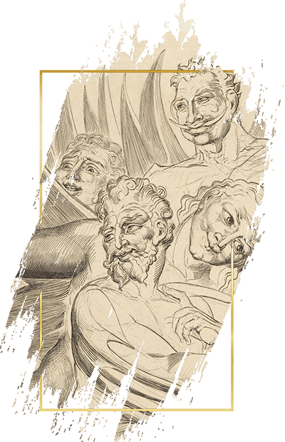

THE SEVEN
SLEEPING SINS

Pride manifests in thinking you can get away with less sleep than other people. Prideful sinners seek to cut corners, cheat the sleep system and follow smart napping strategies. Or they just sleep one or two hours less than the rest of us.
Solution: realize you can't cheat sleep.
Most napping strategies require such a level of scheduling that holding a normal job or interacting with regular people becomes a burden. And while you can shave some hours off your sleeping time, the fatigue will build up.
Worst of all, you won't even realize it. You'll grow to view exhaustion as your new normal, living every day at 70% of your potential. Should you really cheat sleep for such an iffy reward?
Greed manifests itself in delaying the moment you go to bed. Greedful sinners browse Reddit on their phones, binge-watch TV series, exchange idle messages with friends and do everything in their power to get more 'resting time' out of their evening.
Solution: build up good habits and set up countermeasures.
Replace Reddit and TV series with something less dopamine producing. Like reading—check out our books list for reading suggestions. Install a habit tracker on your phone and track your reading progress. Set up a calendar reminder to go to bed at desired times.
Lust manifests itself in chasing pleasure. Lustful sinners try to make the most of their nights even if this brings them fatigue in the process.
Solution: take breaks and avoid excesses.
Neither sex nor masturbation are bad for you. On the contrary, they can help you fall asleep and result in deeper slumber. But push things too far, and the act of love can become distracting or cumbersome.
There's nothing wrong in telling your loved one that you'd rather take this chance to rest and make up to them another night. Similarly, don't try to get the solo show going if exhaustion is piling up on you. It's okay to take breaks.
Envy manifests itself in intrusive thoughts before bed. Envyous sinners spend a lot of time going over their day and replaying interactions in their head.
Solution: realize most things in life aren't worth worrying about.
Pick a problem you're facing and ask yourself: will it matter tomorrow? How about next week? Next month? Next year? Chances are most things that seemed dreadful won't make it past the next-week mark. In the words of King Solomon, "this, too, shall pass".
Gluttony manifests itself in... well, eating. Gluttonous sinners chase midnight snacks and savory foods—even at the cost of their sleep.
Solution: reduce stress levels, plan your meals.
Food can be a way to reduce anxiety, but so can baths, yoga, meditation—or any other things that don't detract from your sleeping time. Consider doing these instead.
It's also possible you're not getting enough food when you need it. Maybe you need to eat a more filling dinner. Or maybe a healthy snack now will stop you from reaching for that sandwich later.
Wrath manifests itself in emotion. A surge of anger can keep you up all night and lead into a very unpleasant morning.
Solution: turn to meditation and work outs.
As cheesy as it sounds, meditation really does help get your emotions under control. Find a meditative mix on YouTube, take some deep breaths and let your mind wander.
Alternatively, find a way to channel your emotions. Going to the gym or signing up for a martial arts class are great steps towards turning your anger into something productive.